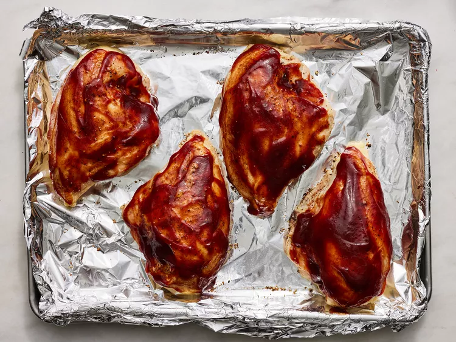

Make this quick and easy meal in the oven for those times you want a nice dinner but don't feel like fussing. Pairs well with baked potatoes or steamed broccoli and green beans.
Step 1
Gather all ingredients.
Step 2
Preheat the oven to 425 degrees F (220 degrees C). Line a baking pan with heavy-duty foil to make cleanup easier.
Step 3
Prepare chicken breasts by cutting off the rib meat if you wish and rinse and pat dry. Leave the skin on. Season chicken with salt and pepper and put in pan.
Step 4
Bake in the preheated oven until juices start to appear, about 10 minutes. Reduce oven temperature to 375 degrees F (190 degrees C).
Step 5
Remove the pan and generously pour 1/2 of the barbecue sauce over the chicken. Continue to bake for 20 minutes. Repeat with remaining barbecue sauce.

Step 6
Cook until no longer pink in the centers and skin is crispy, 15 to 20 minutes more.
Step 7
Serve hot and enjoy!